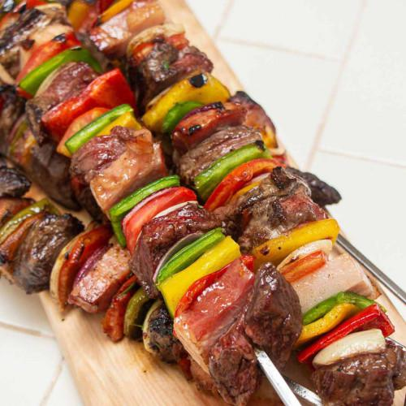

Carne
Brochettes
Receta de Cocineros Argentinos
INGREDIENTES:
- Panceta
- Carne de paleta en un pedazo
- morron rojo
- morron amarillo
- morron verde
- cebolla
- cebolla morada
- tomate perita
- Manteca
- romero
- tomillo
- oregano
- aji molido
Manteca de hierbas:
PROCEDIMIENTO:
- Cortar todos los vegetales, la panceta y la carne en cubos grandes, reservar.
- Armar los brochettes intercalando uno con otro.
- Por otro lado realizar una manteca de hierbas para pincelar las brochettes a medida que se van cocinando.
Para la manteca de hiberas:
- Derretir la maceta y mezclar con todas la hierbas.
